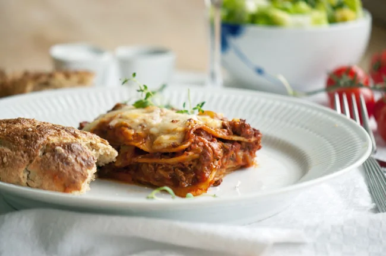

Lasagna

Description
This is the recipe for a lasagna.
Ingredients
- 2 løg, finthakket
- 4 fed hvidløg, finthakket
- 400 g hakket oksekød
- 2 tsk oregano, tørret
- 1 tsk timian, tørret
- 4 gulerod, groftrevet
- 5 stængler bladselleri, groftrevet
- 1 squash, groftrevet
- 1 dl koncentreret tomatpuré
- 2 dåser hakkede tomater
- 1 dl rødvin, eller grøntsagsboullion
- 2 spsk olivenolie
- salt
- sort peber, friskkværnet
Instructions
- Lasagnesauce
- Sauter løg og hvidløg i olivenolie, til de er gennemsigtige.
- Tilsæt kødet og brun det ved høj varme. Skru ned for varmen og tilsæt resten af ingredienserne.
- Lad saucen simrekoge under låg i 2-6 timer – jo længere, jo bedre. Smag på saucen løbende og smag til med flere krydderier, tomatpuré, flåede tomater efter smag – og endelig også salt og peber. Hvis du synes den bliver for tør, kan du komme mere grøntsagsboullion i, men vent gerne til den har simret i en times tid for grøntsagerne afgiver også en del væde til saucen.
- Mornaysauce
- Smelt smørret i en gryde, kom mel i og pisk, til det har samlet sig til en bolle. Pisk mælken langsomt i lidt ad gangen, til konsistensen er som en sauce. Kom ost i og pisk, til den er smeltet. Smag til med revet muskatnød, salt og peber.
- Lasagne
- Kom et lag mornaysauce i et smurt ovnfast fad.
- Kom derefter skiftevis lasagnesauce og -plader i fadet og slut af med sauce.
- Top til sidst med et lag mornaysauce og mozzarella, skåret i tynde skiver. Kom fadet i en forvarmet ovn ved 175 grader varmluft og bag lasagnen i ca. 20-25 minutter, til lasagnepladerne er møre med lidt bid.